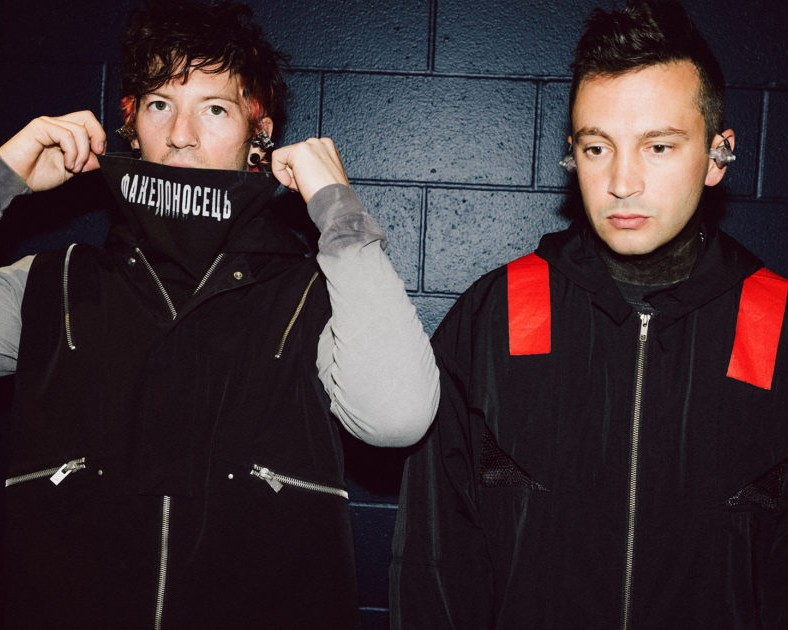

Twenty One Pilots
Who are they?
Twenty One Pilots is an American musical duo from Columbus, Ohio, formed in 2009 by Tyler Joseph, initially alongside Nick Thomas and Chris Salih. However, both Thomas and Salih left the group in 2011, leaving Tyler Joseph as the sole constant member. From that point on, the duo has consisted of Tyler Joseph and Josh Dun, who joined the band in 2011. This current lineup has been pivotal in the band's development and success over the years.
Known for their unique blend of genres, including alternative rock, pop, rap, and electronic music, Twenty One Pilots has earned widespread recognition for their ability to fuse various influences while tackling deep themes such as mental health, anxiety, isolation, and self-discovery. Among their most famous songs are "Stressed Out," "Ride," and "Heathens," which gained substantial commercial success between 2015 and 2016, helping the duo solidify their place as one of the most innovative and popular musical acts of their generation.
The album that marked their breakthrough was Blurryface (2015). This record not only propelled them to international fame but also earned them several prestigious awards and recognitions. "Stressed Out" and "Ride" were two of the album’s most successful singles, with "Stressed Out" winning a Grammy Award in 2017 for Best Pop Duo/Group Performance. Furthermore, Blurryface was the first album from the duo in which every track received gold certification, an impressive feat that speaks to the quality and resonance of their music.
Another key milestone in Twenty One Pilots' career came with the release of "Heathens", a single featured on the soundtrack of the movie Suicide Squad (2016). The song not only reached number 2 on the Billboard Hot 100 but also made history by making Twenty One Pilots the first alternative act to have two concurrent top-five singles on the Billboard Hot 100, joining legends such as The Beatles and Elvis Presley—artists who had previously achieved this feat.
Following these successes, the band continued to demonstrate their versatility and ability to connect with their audience through new sounds and projects. In 2018, they released Trench, an album that delved into themes of inner struggles, anxiety, and personal growth but with a more complex and experimental sound. Like Blurryface, Trench received critical acclaim and further solidified their position in contemporary music.
In 2021, the duo released Scaled and Icy, an album that marked a shift toward a brighter, more electronic sound. While the album was more optimistic in tone, the lyrics remained introspective and emotional, maintaining the essence of the band while exploring new directions. In 2024, they released their long-awaited project Clancy, an album that continued their exploration of existential and emotional themes, combined with a more experimental and ambitious sonic approach. In 2025, the band released Breach, an album highly anticipated by fans, which continues to explore the complexity of the human mind and emotional journey through new sonic experiences.
With 12 number-one hits on the Alternative Airplay chart by Billboard, Twenty One Pilots has firmly established themselves as one of the most successful acts in the alternative genre, tying with Foo Fighters for the fifth-most number-one hits on the chart. This achievement highlights the band's longevity and relevance in the alternative and broader music scenes.
Throughout their career, the band has cultivated a deep connection with their fanbase, known as The Skeleton Clique, who feel that Tyler Joseph's lyrics, addressing personal struggles and resilience, resonate deeply with their own experiences. The band’s ability to stay authentic while evolving their sound and reinventing themselves with each new release has been one of the key factors to their continued success.
Today, Twenty One Pilots remains one of the most innovative and influential acts in the music industry, leaving a lasting mark on alternative rock and contemporary music as a whole.